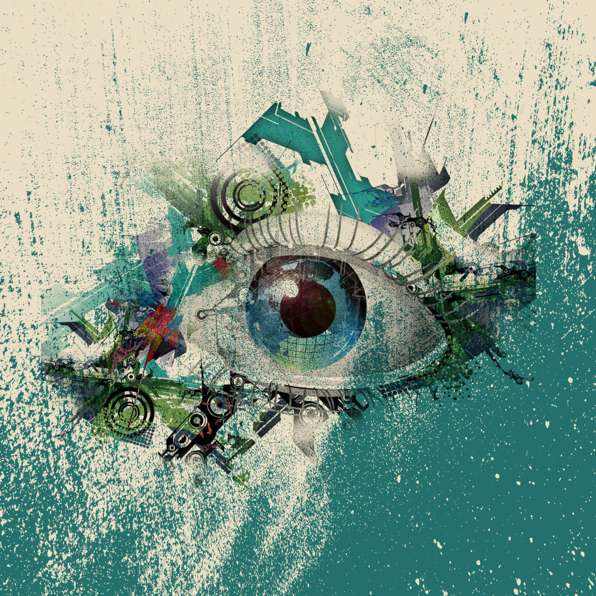

How philosophical aspects play a part in our life
- Ethics
- Our ethics are fundamental beliefs that guide us through our daily lives and allow us to make consious decsions between right and wrong.
- Often time our ethics are shaped by the enviornment that we were raised in.
- "Since virtues are of two kinds, intellectual and ethical... ethical virtue is acquired by habituation"- Aristotle.
- Logic
- Logic plays an important aspect in both truth and morals. It allows to us use our senses to determine outcomes from situations that we encounter.
- The principle of logic varies from person to person, which creates indivduality among the world.
- "Inductive logic is a very difficult and intricate subject, partly because the practitioners (experts) of this discipline are not in complete agreement concerning what constitutes correct inductive reasoning" - Gary M. Hardegree
- Truths
- We develop truths based on our experiences and things we have learned from those around us. We hold a lot of value on what we believe to be true.
- We are constantly searching for answers or solutions to satisfy our needs. Our search for truth is one of the main challenges in life and continues to drives us forward.
- "This man, who at other times seeks nothing but sincerity, truth, freedom from deception, and protection aganist ensnaring suprise attacks, now executes a masterpiece of deception: he executes his masterpiece of deception in misfortune, as the other type of man executes his times of happiness." - Friedrich Nietzsche

Heres an outsiders take on why Philsophy is important to understand Smart Man's Article